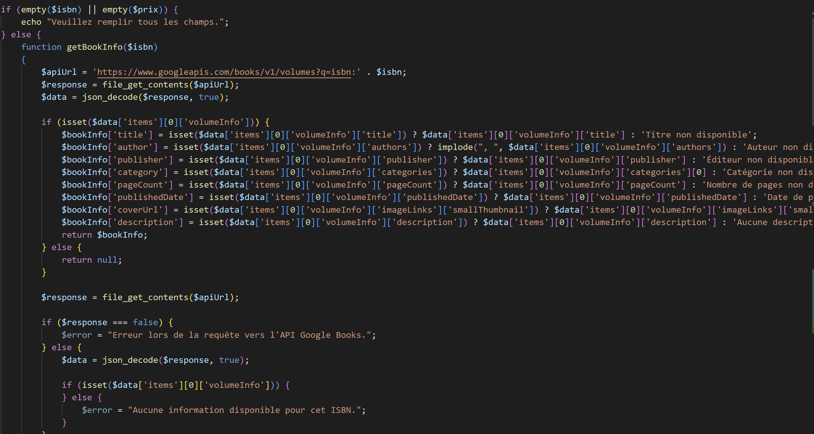
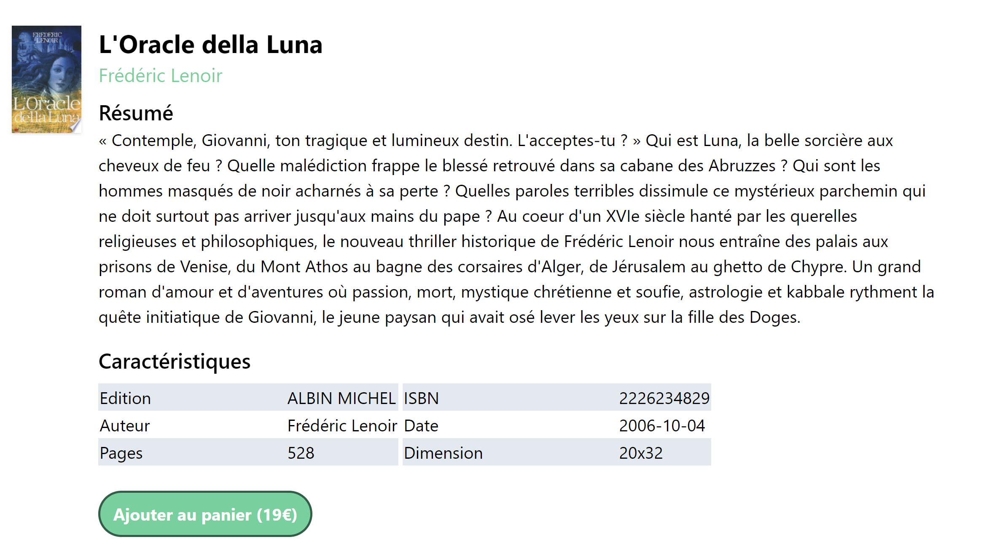
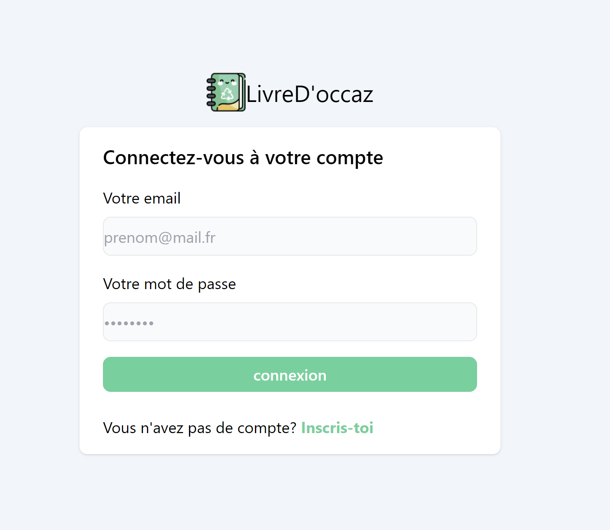

Au cours des deux ans de formation nous avons conçus un projet qui s'ameliorer en même temps que nos compétences.Ce projet web est mon client léger, cette application web est un site de mise en vente de petite annonce de livre d'occasion .
En utilisant HTML et CSS, plus précisément Tailwind css, j'ai créé une interface attrayante et ergonomique pour offrir une expérience utilisateur agréable. Les fonctionnalités de mise en forme et de personnalisation ont été soigneusement intégrées pour rendre l'expérience plus dynamique et interactive.

Grâce à PHP et PHPMyAdmin, j'ai développé la logique de traitement des annonces, la gestion des utilisateurs et des sessions, la sauvegarde des annonces et leurs suppression, ainsi que la possibilité d'obtenir les détails tel que la description, l'auteur, l'éditeur, le nombrede page, etc, grâce a un appelle vers l'API de GoogleBook.
Chaque livres est consultable sur la page d'une annonce est renseigné la description, l'editeur, l'auteur, le nombre de page, l'ISBN, la date de publication, et la dimension. Ainsi que le prix renseigné par l'utilisateur.
Voici la page d'un annonce :
Dans le projet "LivreD'occaz", j'ai également développé un espace d'inscription et de connexion pour permettre aux utilisateurs de se connecter à leur compte.
L'interface de l'espace de connexion permet aux utilisateurs de saisir leurs identifiants (mail et mot de passe) pour accéder à leur compte et si l'utilisateur ne possède pas de compte il y a la possibilité d'en créer un. J'ai mis en place des fonctionnalités de validation pour garantir la saisie correcte du mot de passe.
Un fois dans la base de données le mot de passe et hacher afin de garantir une meilleur sécurité des données personnels.
Sans profil il est possible d'avoir accès a la page d'accueil, mais il vous sera impossible de mettre une annonce en ligne.
L'une des fonctionnalités principales du projet LivreD'occaz que nous avons développé est la possibilité pour les utilisateurs de déposer des annonces sur le site.
En utilisant le formulaire de dépôt d'annonce, les utilisateurs peuvent fournir les informations nécessaires pour finalisé la mise en ligne de l'annonce car grâce a l'API de GoogleBook, il suffit de renseigner l'ISBN du livre et les autres information comme son auteur, éditeur, description ce remplirons et seront envoyé automatiquement vers la base de données.
Le projet ChatBox que nous avons développé repose sur une base de données MySQL pour stocker et gérer les annonces, ainsi que les informations des utilisateurs. Notre base de données est structurée avec deux tables principales : "annonces" et "users".
La table "annonces" enregistre les annonces publié sur la site. Elle contient plusieurs colonnes essentielles, qui sont pour la plupart renseigné a la base de donnée grâce a l'API automatiquement. Les seules colonnes que l'utilisateur entrera sont le prix et l'ISBN.
La table "Users" elle enregistre les utilisateurs qui s'inscrive sur la site, comme decrit dans la partie "Connexion". Le mot de passe de chaque utilisateur est hacher une fois intégrer daans la base de données, pour renforcer la sécurité de cette dernière.